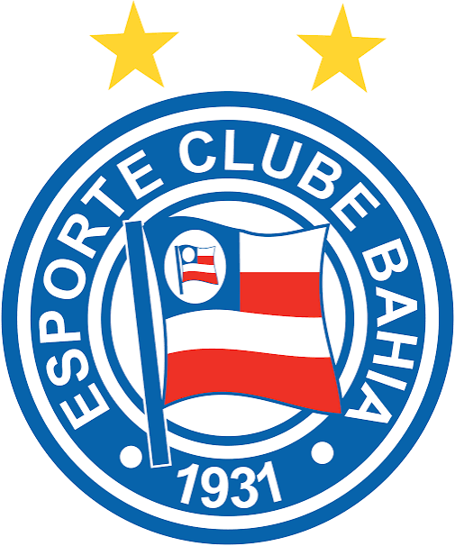
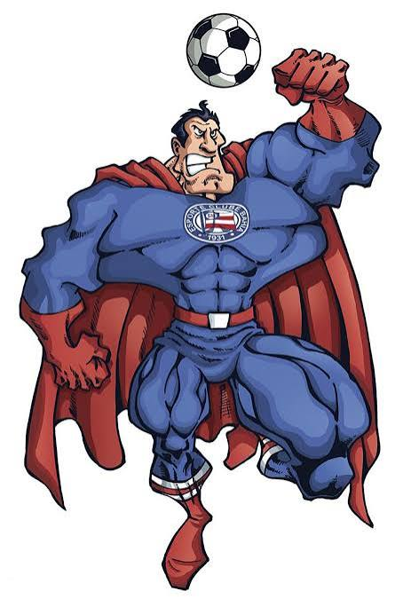

Fundação: 1 de janeiro de 1931
O Esporte Clube Bahia "nasceu para vencer", frase eternizada por seus fundadores, jogadores de clubes que haviam acabado de encerrar as atividades em Salvador. Logo em seu primeiro ano de vida, conquistou o Campeonato Baiano, mostrando seu DNA vitorioso.
Dono da maior torcida do Nordeste, o "Esquadrão de Aço" carrega o imenso orgulho de ter sido o Primeiro Campeão Brasileiro da história (na Taça Brasil de 1959), vencendo o esquadrão do Santos que contava com o Rei Pelé. Em 1988, voltou a surpreender o país ao conquistar o seu segundo Campeonato Brasileiro, eternizando craques como Bobô sob o comando de Evaristo de Macedo.